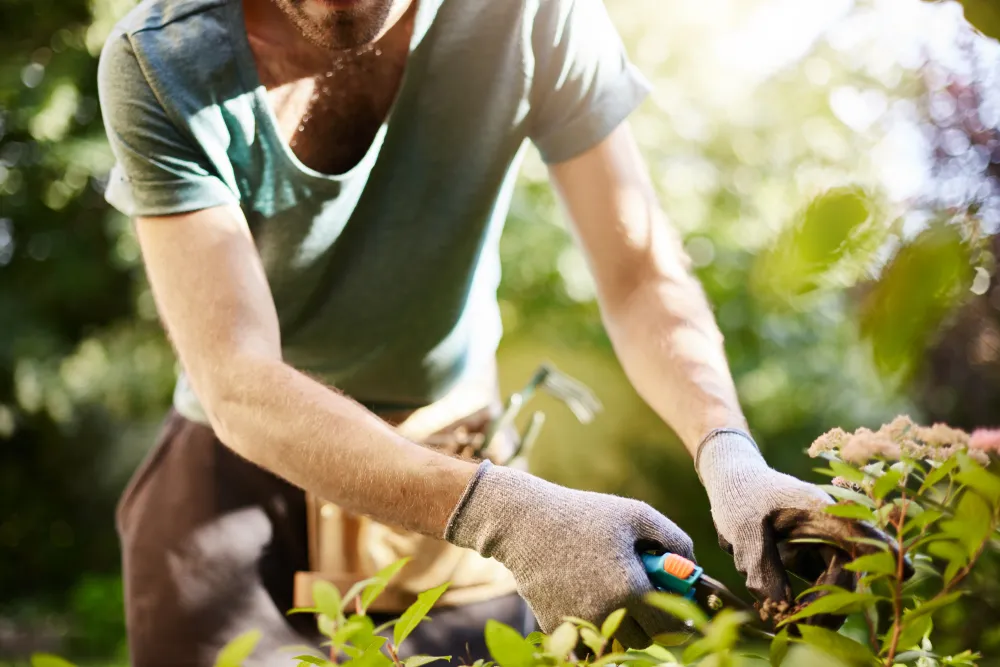

Ways to Prevent Injury When Gardening

You may not think of gardening as a strenuous activity, but you’d be surprise at how sore you might find yourself the next day. Hauling bags of soil, pushing a loaded wheelbarrow, mowing, raking, lifting patio stones can be quite a workout.
The health benefits associated with gardening are quite impressive, especially when you consider that you’re using all the major muscle groups, not to mention the mental benefits of working outdoors and nurturing a garden. As with any exercise program, beginning slowly and building up endurance is important. To help prevent injury and alleviate strained muscles, here are five ways to prevent injuries when gardening…
Stretch Before and After
Sore muscles and stiffness after gardening can indicate inadequate stretching or overused muscles the next day. After a day spent gardening, you should feel tired, but you shouldn’t hurt. Stretching before you start gardening can help warm up your muscles and prevent injury.
If you’re doing extremely strenuous work—like turning compost or shoveling soil—make sure you take frequent breaks and stretch in between. When you do the same movement over and over again, muscle fatigue can set in quickly.
Lift Heavy Bags Properly
Bags of soil, mulch and fertilizer can be quite heavy and awkward. To prevent back injuries, remember to bend at the knees and lift with your legs. Don’t bend and lift with your back. The biggest and strongest muscles in your legs can bear the brunt of the weight.
Dropping the weight safely is as important as lifting it. Most people tend to lift a bag, then twist and drop it. Not only can this twisting action tweak your back, it can cause pressure on your hips. Instead, remember to move your feet, then turn your body and drop your load. This technique should be used when shoveling as well.
Use the Right Tools for the Job
While most gardening tools still look the same as they did twenty-years ago, subtle changes have been introduced to make them more ergonomically friendly.
Gardening gloves designed to improve grip, softer handles for people with arthritis and curved handles for trowels and weeders are all available to make the gardening experience easier.
Avoid Repetitive Tasks
You may have grand expectations of creating a raised garden bed in a weekend or building a small water fountain, but repeating the same motion over and over again and increase your chances of injury. If you are on a set timeline, make sure you take a break every 30-minutes.
As with any gardening project, having a helper or gardening buddy is extremely helpful. You can take turns doing the heavy lifting or pushing the wheelbarrow. Working together will allow you to complete your project without experiencing repetitive strain.
Stay in Shape
For most, gardening is an activity that is enjoyed 3 out of 4 seasons a year. It’s important to stay in shape and exercise year round. The winter thaw brings excitement for the new gardening season approaching, but before you spend a whole day in the garden racking, pruning, and tidying up, it’s important to pace yourself especially if you’ve been inactive over the winter.
If you stay in shape or prepare yourself for the upcoming gardening season, you’ll prevent injuries and stay healthy to enjoy the whole gardening season.
Source: https://activebeat.com/fitness/5-ways-to-prevent-injuries-when-gardening/